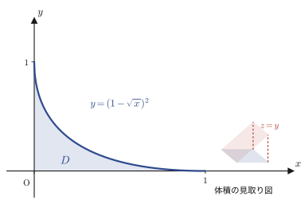
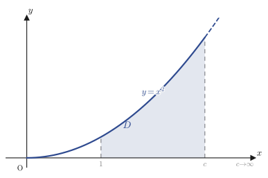

第7章重積分（多変数関数の積分）
第6章では，2変数関数 $z=f(x,y)$ の「傾き具合」を測る道具として偏微分（partial derivative）を学んだ．本章では向きを変え，2変数関数を積分する方法を考える．1変数の積分 $\displaystyle\int_a^b f(x)\,dx$ は「曲線 $y=f(x)$ の下側の面積」を測る道具だった．同じ発想を1次元だけ上に持ち上げると，2変数関数 $z=f(x,y)$ の積分は「曲面 $z=f(x,y)$ の下側の体積」を測る道具になる．これが本章の主役，重積分（multiple integral，2変数のときは特に二重積分 double integral）である．材料科学の言葉で言えば，物体の質量は密度 $\rho(x,y,z)$ を体積全体にわたって足し合わせたもの $\displaystyle\iiint\rho\,dxdydz$ であり，これも重積分（このときは三重積分 triple integral）そのものである．
重積分を実際に計算するには，2つ（あるいは3つ）の変数について1変数の積分を順番に実行すればよい（これを累次積分（iterated integral）という）．しかし累次積分がそのまま使える形の領域は限られており，円や楕円，斜めに傾いた平行四辺形のような領域では，座標を取り替えたほうが計算がずっと簡単になることが多い．そこで本章の後半では，座標変換にともなって面積要素 $dxdy$ がどう変化するかを表すヤコビアン（Jacobian）を導入し，極座標変換や一次変換（回転・斜交座標——座標軸が直交しない座標系のこと）を使った計算例を数多く扱う．その集大成として，統計学・物理学のいたるところに現れるガウス積分 $\displaystyle\int_{-\infty}^{\infty}e^{-x^2}dx=\sqrt{\pi}$ を重積分を使って証明し，さらに四面体や球の体積・表面積を複数の方法で求めることで，「同じ答えに至る道は1つではない」ことを実感してもらう．
- 重積分 $\displaystyle\iint_D f(x,y)\,dxdy$ の意味（曲面の下側の体積）と，累次積分による具体的な計算方法（積分の順序を入れ替える2通りのやり方）
- 広義重積分：被積分関数が発散する点をもつ場合や，積分領域が非有界な場合に，極限 $\displaystyle\lim_{c\to\cdot}$ を使って重積分を定義する方法
- ヤコビアン $\left|\det J\right|$ の定義と，$dxdy=|J|\,dudv$ という面積要素の変換公式，およびその幾何学的な意味（1次変換による面積の拡大率）
- 極座標変換 $x=r\cos\theta,\ y=r\sin\theta$（ヤコビアン $r$）と，一次変換（回転・斜交座標）によるヤコビアンの計算
- ガウス積分 $\displaystyle\int_{-\infty}^{\infty}e^{-x^2}dx=\sqrt{\pi}$ の2通りの証明（重積分を極座標に変換する方法と，はさみうちの原理を使う方法）
- 三重積分による四面体の体積の計算（積分の順序を変えた2通りの解法）
- 球の体積・表面積を，球座標，極座標＋断面積分，単純な断面積分など複数の方法で求め，それぞれの利点を比較する
もとにしたノート：望月泰英『数学ノート 微分積分学』 pp. 63–72．
7.1 重積分の定義と累次積分
1変数の定積分 $\displaystyle\int_a^b f(x)\,dx$ は，「区間 $[a,b]$ を細かく刻み，各小区間の幅 $\Delta x$ と，そこでの関数の高さ $f(x)$ の積 $f(x)\Delta x$（細長い長方形の面積）を足し合わせ，刻みを限りなく細かくする」という手続きで定義された（高校数学・第5章で学んだ区分求積法）．2変数関数 $z=f(x,y)$ でも，まったく同じ発想をそのまま使うことができる．平面上の領域 $D$ を細かい正方形（一辺 $\Delta x,\Delta y$）に刻み，各正方形の上にできる細い柱（底面積 $\Delta x\Delta y$，高さ $f(x,y)$）の体積 $f(x,y)\Delta x\Delta y$ をすべて足し合わせ，刻みを限りなく細かくする．この極限を重積分（multiple integral）と呼び，$\displaystyle\iint_D f(x,y)\,dxdy$ と書く．積分記号が2つ重なっているのは「$x$ 方向と $y$ 方向の両方について細かく刻んで足し合わせる」ことを表す記法である．（本章で領域を表す記号 $D$ は，第6章6.6節の極値判定に出てきた判別式 $D$ とは無関係であり，本章の内部でのみ「積分する平面領域」の意味で用いる．）
定義7.1 重積分（二重積分）
平面上の有界な領域 $D$ で定義された関数 $f(x,y)$ に対し，$D$ を細かい長方形に分割し，各長方形（面積 $\Delta x_i\Delta y_j$）の中の1点における関数値 $f(x_i,y_j)$ との積の総和
$$ \sum_{i,j} f(x_i,y_j)\,\Delta x_i\Delta y_j $$を作る．分割を限りなく細かくしたときにこの和がある値に収束するならば，その極限値を $f(x,y)$ の $D$ 上の重積分といい，
$$ \iint_D f(x,y)\,dxdy $$と書く．$f(x,y)\ge0$ のとき，重積分 $\displaystyle\iint_D f(x,y)\,dxdy$ は，領域 $D$ を底面とし，曲面 $z=f(x,y)$ を屋根とする立体の体積に等しい．
では実際にこの体積をどう計算すればよいか．鍵になるのは，2重の和を，2回の1変数の和（＝1変数の積分）に分けて計算できるという事実である．これを累次積分（iterated integral）という．領域 $D$ の形によって，2通りの書き方がある．
公式7.1 累次積分
(I) 領域が $D=\{(x,y)\mid a\le x\le b,\ g_1(x)\le y\le g_2(x)\}$（$x$ を固定するごとに $y$ の動く範囲 $[g_1(x),g_2(x)]$ が決まる形）と書けるとき，
$$ \iint_D f(x,y)\,dxdy=\int_a^b\left\{\int_{g_1(x)}^{g_2(x)} f(x,y)\,dy\right\}dx \qquad\text{（先に $y$ で積分する）} $$(II) 領域が $D=\{(x,y)\mid c\le y\le d,\ h_1(y)\le x\le h_2(y)\}$（$y$ を固定するごとに $x$ の動く範囲 $[h_1(y),h_2(y)]$ が決まる形）と書けるとき，
$$ \iint_D f(x,y)\,dxdy=\int_c^d\left\{\int_{h_1(y)}^{h_2(y)} f(x,y)\,dx\right\}dy \qquad\text{（先に $x$ で積分する）} $$イメージ：なぜ2回の積分でよいのか
(I) の式の内側の積分 $\displaystyle\int_{g_1(x)}^{g_2(x)} f(x,y)\,dy$ は，$x$ をある値に固定したときの「$y$ 方向のスライス」——立体を $x=$（一定）の平面で薄く切った断面の面積——を表す．この断面積は $x$ の値によって変わるので，$x$ の関数 $S(x)=\displaystyle\int_{g_1(x)}^{g_2(x)} f(x,y)\,dy$ とみなせる．あとはこの断面積 $S(x)$ を $x=a$ から $x=b$ まで積分すれば（＝薄切りを $x$ 方向に積み重ねれば），立体全体の体積になる．これは高校数学で学んだ「立体の体積 $=\displaystyle\int_a^b S(x)\,dx$（$S(x)$ は断面積）」の公式と完全に同じ発想であり，実際に7.6節・7.7節の四面体・球の体積の計算でもこの断面積分の考え方を使う．領域 $D$ が (II) の形のときは，$x$ と $y$ の役割を入れ替えて同じ議論をすればよい．
なぜ？：どちらの順序で積分しても同じ答えになる
公式7.1 の (I) と (II) は，同じ重積分 $\displaystyle\iint_D f(x,y)\,dxdy$ を，短冊の切り方（縦切りか横切りか）を変えて計算しているだけであり，同じ立体の体積を求めている以上，答えは一致する．この「積分の順序を交換してよい」という事実は，$f$ が連続であるような領域では常に成り立つ（大学の解析学ではフビニの定理 Fubini's theorem として厳密に扱われる）．どちらの順序が計算しやすいかは領域 $D$ の形や被積分関数によって変わるので，計算の際にはまず領域の形を図示し，どちらの切り方が積分範囲を書きやすいかを見極めるとよい．次の例題7.1・例題7.2でこの使い分けを確認しよう．
例題7.1 ウォームアップ：長方形領域での重積分
領域 $D=\{(x,y)\mid 0\le x\le1,\ 0\le y\le2\}$ における関数 $f(x,y)=xy$ の重積分 $\displaystyle\iint_D xy\,dxdy$ を求めよ．
解答 $D$ は長方形なので，$x$ の範囲 $[0,1]$ と $y$ の範囲 $[0,2]$ はどちらも他方に依存しない（公式7.1 (I) で $g_1(x)=0,\,g_2(x)=2$ が定数関数になっている特別な場合）．先に $y$ で積分すると，
$$ \int_0^2 xy\,dy=x\Big[\frac{y^2}{2}\Big]_0^2=x\cdot\frac{4}{2}=2x $$（$x$ を定数とみなして $y$ について積分した．$xy$ の $y$ に関する原始関数は $x\cdot\dfrac{y^2}{2}$ である．）続けて $x$ で積分すると，
$$ \iint_D xy\,dxdy=\int_0^1 2x\,dx=\Big[x^2\Big]_0^1=1 $$を得る．先に $x$ で積分しても同じ結果になることを確かめておこう．$\displaystyle\int_0^1 xy\,dx=y\Big[\frac{x^2}{2}\Big]_0^1=\frac{y}{2}$，続けて $\displaystyle\int_0^2\frac{y}{2}\,dy=\Big[\frac{y^2}{4}\Big]_0^2=1$ となり，たしかに一致する（sympyで検算済み）．
次に，ノートにある最初の例題を見てみよう．今度は領域 $D$ が長方形ではなく，曲線で囲まれた図形になる．
例題7.2 領域 $\sqrt{x}+\sqrt{y}\le1$ での重積分
領域 $D=\{(x,y)\mid \sqrt{x}+\sqrt{y}\le1\}$ における関数 $f(x,y)=y$ の重積分 $V=\displaystyle\iint_D y\,dxdy$ を求めよ．
解答 まず領域 $D$ の形を確認する．$\sqrt{x}$，$\sqrt{y}$ が定義されるためには $x\ge0,\,y\ge0$ が必要である．また $\sqrt{x}\le1$（$\because\sqrt{y}\ge0$ と $\sqrt{x}+\sqrt{y}\le1$ より）から $0\le x\le1$，同様に $0\le y\le1$ である．境界の曲線 $\sqrt{x}+\sqrt{y}=1$ を $y$ について解くと，$\sqrt{y}=1-\sqrt{x}$ の両辺を2乗して
$$ y=(1-\sqrt{x})^2\qquad(0\le x\le1) $$を得る（2乗する前に $1-\sqrt{x}\ge0$，すなわち $x\le1$ であることを確かめてから2乗している点に注意する）．したがって $D$ は，$0\le x\le1$ の範囲で，$0\le y\le(1-\sqrt{x})^2$ を満たす点の集合である．これは公式7.1 (I) の形（$g_1(x)=0,\ g_2(x)=(1-\sqrt{x})^2$）そのものである．

解法1（先に $y$ で積分）
$$ V=\int_0^1\int_0^{(1-\sqrt{x})^2} y\,dy\,dx $$内側の積分は，$y$ の原始関数が $y^2/2$ であることから，
$$ \int_0^{(1-\sqrt{x})^2} y\,dy=\Big[\frac{y^2}{2}\Big]_0^{(1-\sqrt{x})^2}=\frac{1}{2}(1-\sqrt{x})^4 $$となる．したがって
$$ V=\int_0^1 \frac{1}{2}(1-\sqrt{x})^4\,dx $$を計算すればよい．置換 $t=1-\sqrt{x}$（$x=(1-t)^2$，$dx=-2(1-t)\,dt$，$x:0\to1$ のとき $t:1\to0$）を使うと，
$$ V=\int_1^0 \frac{1}{2}t^4\cdot\{-2(1-t)\}\,dt=\int_0^1 t^4(1-t)\,dt=\int_0^1(t^4-t^5)\,dt=\Big[\frac{t^5}{5}-\frac{t^6}{6}\Big]_0^1=\frac{1}{5}-\frac{1}{6}=\frac{1}{30} $$（ノートには置換の途中式が書かれておらず結果だけが記されていたので，ここでは置換積分の計算をすべて補った．）よって $V=\dfrac{1}{30}$ である．
解法2（先に $x$ で積分） 境界の式 $y=(1-\sqrt{x})^2$ を今度は $x$ について解くと，対称性から $x=(1-\sqrt{y})^2$（$0\le y\le1$）であり，
$$ V=\int_0^1\int_0^{(1-\sqrt{y})^2} y\,dx\,dy $$内側の積分は，被積分関数 $y$ が $x$ に依存しない定数なので，$x$ の幅をかけるだけでよい．
$$ \int_0^{(1-\sqrt{y})^2} y\,dx=y\cdot(1-\sqrt{y})^2 $$したがって
$$ V=\int_0^1 y(1-\sqrt{y})^2\,dy $$を計算する．$(1-\sqrt{y})^2=1-2\sqrt{y}+y$ と展開すると，
$$ V=\int_0^1\left(y-2y^{3/2}+y^2\right)dy=\Big[\frac{y^2}{2}-2\cdot\frac{y^{5/2}}{5/2}+\frac{y^3}{3}\Big]_0^1=\frac12-\frac45+\frac13 $$通分すると $\dfrac12-\dfrac45+\dfrac13=\dfrac{15}{30}-\dfrac{24}{30}+\dfrac{10}{30}=\dfrac{1}{30}$．解法1と一致する（sympyで両方の解法を検算済み．ノートも同じ結果 $\frac{1}{30}$ を記している）．
7.2 広義重積分の例
数学ノート：広義積分の2変数への拡張
第5章で，被積分関数が区間の端で発散する場合や，積分区間が無限に伸びている場合の定積分を，極限を使って定義した（広義積分，improper integral）．たとえば $\displaystyle\int_0^1\frac{dx}{\sqrt{x}}$ は $x=0$ で被積分関数が発散するので，$\displaystyle\int_0^1\frac{dx}{\sqrt{x}}=\lim_{c\to+0}\int_c^1\frac{dx}{\sqrt{x}}$ と定義した．重積分でもまったく同じ発想が使える．被積分関数 $f(x,y)$ が領域 $D$ 内のある点で発散する場合や，$D$ 自体が無限に広がっている場合，$D$ の中からその「危険な部分」を少しだけ避けた領域 $D_c$（$c$ は小さいパラメータ，または大きい打ち切り半径）の上で先に重積分を計算し，そのあとで $c\to0$（または $c\to\infty$）の極限をとる．これを広義重積分という．本節ではこの考え方を使う2つの例題を扱う．
例題7.3 原点で発散する広義重積分
領域 $D=\{(x,y)\mid 0\le y\le x\le1\}$（直角三角形，原点 $(0,0)$ を頂点にもつ）における関数 $f(x,y)=\dfrac{1}{\sqrt{x^2+y^2}}$ の広義重積分 $\displaystyle\iint_D\frac{dxdy}{\sqrt{x^2+y^2}}$ を求めよ．
解答 被積分関数 $f(x,y)=1/\sqrt{x^2+y^2}$ は原点 $(0,0)$ で分母が $0$ になり発散する．$D$ の中で原点はちょうど三角形の頂点にあたる．図7.5に，この発散のようすを3次元的なイメージで示す（原点に近づくにつれて曲面 $z=f(x,y)$ が上下に限りなく伸びる漏斗（ラッパ）状になる）．そこで，$x\ge c$（$c$ は小さい正の数）の部分だけをまず考え，あとで $c\to+0$ とする．
数学ノート：$\displaystyle\int\frac{dy}{\sqrt{y^2+a^2}}$ の公式
$a$ を定数とするとき，$\displaystyle\int\frac{dy}{\sqrt{y^2+a^2}}=\ln\left|y+\sqrt{y^2+a^2}\right|+C$（積分公式集に載っている公式．右辺を $y$ で微分すると，$\dfrac{d}{dy}\ln(y+\sqrt{y^2+a^2})=\dfrac{1+\frac{y}{\sqrt{y^2+a^2}}}{y+\sqrt{y^2+a^2}}=\dfrac{\sqrt{y^2+a^2}+y}{\sqrt{y^2+a^2}\,(y+\sqrt{y^2+a^2})}=\dfrac{1}{\sqrt{y^2+a^2}}$ となり，たしかに被積分関数に戻ることが確認できる）．
この公式で $a=x$（$x$ を定数とみて $y$ について積分するので，$a^2=x^2$）とおくと，内側の積分は
$$ \int_0^{x}\frac{1}{\sqrt{x^2+y^2}}\,dy=\Big[\ln\big|y+\sqrt{x^2+y^2}\big|\Big]_0^{x} =\ln\big|x+\sqrt{2}\,x\big|-\ln|x| $$である（$y=x$ を代入すると $\sqrt{x^2+x^2}=\sqrt{2x^2}=\sqrt2\,x$（$x>0$ なので），$y=0$ を代入すると $\sqrt{x^2}=x$ になる）．対数の性質 $\ln A-\ln B=\ln(A/B)$ を使って整理すると，
$$ \ln\big|(1+\sqrt2)x\big|-\ln|x|=\ln(1+\sqrt2)+\ln x-\ln x=\ln(1+\sqrt2) $$となり，$x$ にはまったく依存しない定数になる（これは被積分関数 $1/\sqrt{x^2+y^2}$ が「$x,y$ を同じ倍率で拡大縮小しても値が変わらない」という性質——斉次性（homogeneity）——を持つことの表れである）．したがって，
$$ V=\lim_{c\to+0}\int_c^1 \ln(1+\sqrt{2})\,dx=\lim_{c\to+0}\Big\{(1-c)\ln(1+\sqrt2)\Big\}=\ln(1+\sqrt2) $$（$\ln(1+\sqrt2)$ は $x$ に依らない定数なので，$x$ について積分すると幅 $(1-c)$ 倍になるだけである．）$c\to+0$ とすると $1-c\to1$ なので，最終的に
$$ \iint_D\frac{dxdy}{\sqrt{x^2+y^2}}=\ln(1+\sqrt2)\approx0.8814 $$を得る（sympyで検算済み）．
例題7.4 非有界領域での広義重積分
領域 $D=\{(x,y)\mid 1\le x,\ 0\le y\le x^2\}$（$x$ 方向に無限に広がる領域）における関数 $f(x,y)=\dfrac{1}{x^4+y^2}$ の広義重積分 $\displaystyle\iint_D\frac{dxdy}{x^4+y^2}$ を求めよ．

解答 領域が $x\to\infty$ まで広がっているので，$1\le x\le c$（$c$ は大きい正の数）で打ち切って計算し，あとで $c\to\infty$ とする．
$$ V=\iint_D\frac{dxdy}{x^4+y^2}=\lim_{c\to\infty}\int_1^c\int_0^{x^2}\frac{1}{x^4+y^2}\,dy\,dx $$内側の積分では $x$ を定数とみなす．$x^4+y^2=x^4\left(1+\left(\dfrac{y}{x^2}\right)^2\right)$ と因数分解できることに注目すると，逆正接関数の積分公式 $\displaystyle\int\frac{dt}{1+t^2}=\tan^{-1}t+C$（$t=y/x^2$，$dt=dy/x^2$）が使える．
$$ \int_0^{x^2}\frac{1}{x^4+y^2}\,dy=\frac{1}{x^4}\int_0^{x^2}\frac{1}{1+\left(\frac{y}{x^2}\right)^2}\,dy =\frac{1}{x^4}\left[x^2\tan^{-1}\frac{y}{x^2}\right]_0^{x^2} $$（$t=y/x^2$ と置換すると $dy=x^2\,dt$ なので，$\displaystyle\int\frac{dy}{1+(y/x^2)^2}=x^2\int\frac{dt}{1+t^2}=x^2\tan^{-1}t=x^2\tan^{-1}(y/x^2)$ となる．）$y=x^2$ を代入すると $\tan^{-1}(x^2/x^2)=\tan^{-1}1=\dfrac{\pi}{4}$，$y=0$ を代入すると $\tan^{-1}0=0$ である．したがって，
$$ \int_0^{x^2}\frac{1}{x^4+y^2}\,dy=\frac{1}{x^4}\cdot x^2\left(\frac{\pi}{4}-0\right)=\frac{1}{x^2}\cdot\frac{\pi}{4} $$を得る．これを $x=1$ から $x=c$ まで積分すると，
$$ V=\lim_{c\to\infty}\int_1^c \frac{\pi}{4}\cdot\frac{1}{x^2}\,dx =\lim_{c\to\infty}\frac{\pi}{4}\left[-\frac{1}{x}\right]_1^{c} =\lim_{c\to\infty}\frac{\pi}{4}\left(1-\frac{1}{c}\right) $$$c\to\infty$ のとき $1/c\to0$ だから，
$$ \iint_D\frac{dxdy}{x^4+y^2}=\frac{\pi}{4} $$を得る（sympyで検算済み．ノートの計算では，途中の $\tan^{-1}1=\pi/4$，$\tan^{-1}0=0$ の評価を確認する小さな書き込みが余白にあったので，本文にもその評価の根拠を明記した）．
7.3 ヤコビアン（変数変換と面積要素）
なぜ？：座標を取り替えたくなる例
次のような重積分を考えてみよう．領域 $D=\{(x,y)\mid0\le2x+y\le\pi,\ 0\le2x-y\le\pi\}$ における関数 $f(x,y)=(2x+y)\sin(2x-y)$ の重積分 $\displaystyle\iint_D f(x,y)\,dxdy$ を求めたい．$D$ は $x,y$ の1次式で挟まれた平行四辺形であり，$f(x,y)$ の中身も $2x+y$ と $2x-y$ という2つの1次式でできている．そこで $2x+y=u$，$2x-y=v$ と新しい変数を導入すれば，領域は単純な長方形 $0\le u\le\pi,\ 0\le v\le\pi$ になり，被積分関数も $u\sin v$ という簡単な形になる．2つの式を $x,y$ について解くと，
$$ x=\frac{u+v}{4},\qquad y=\frac{u-v}{2} $$とも表せる（$2x+y=u$ と $2x-y=v$ を辺々足すと $4x=u+v$，辺々引くと $2y=u-v$ となることから確かめられる）．しかし，ここで問題が生じる．重積分は $dxdy$ という面積要素の上で定義されていたから，変数を $u,v$ に取り替えるなら $dxdy$ も $dudv$ に書き換えなければならない．ところが $dxdy\neq dudv$ である（後で確かめるように，実際にはこの例では $dxdy=\frac14\,dudv$ になる）．この「面積要素をどう変換するか」という問題を解決するのが，本節の主役ヤコビアン（Jacobian）である．
数学ノート：2次の行列式（先取り）
ヤコビアンの定義には2次の正方行列の行列式（determinant）が必要になる．行列式の一般論は第8章で学ぶが，本章で使うのは次の最も簡単な場合だけである．2次の正方行列 $\begin{pmatrix}a&b\\c&d\end{pmatrix}$ に対して，その行列式を
$$ \det\begin{pmatrix}a&b\\c&d\end{pmatrix}=\begin{vmatrix}a&b\\c&d\end{vmatrix}:=ad-bc $$と定義する（記号 $\begin{vmatrix}\cdot\end{vmatrix}$ は行列式を表す．行列を表す角括弧 $[\ ]$ や丸括弧 $(\ )$ と区別するため，縦棒を使う）．「主対角線（左上から右下）の積から，副対角線（右上から左下）の積を引く」と覚えればよい．
定義7.2 ヤコビアン
$x=x(u,v)$，$y=y(u,v)$ が $u,v$ の関数として与えられているとき，行列
$$ J=\begin{pmatrix}\pdiff{x}{u} & \pdiff{x}{v}\\[2mm] \pdiff{y}{u} & \pdiff{y}{v}\end{pmatrix} $$を（$x,y$ の $u,v$ に関する）ヤコビ行列といい，その行列式
$$ \det J=\begin{vmatrix}\pdiff{x}{u} & \pdiff{x}{v}\\[2mm] \pdiff{y}{u} & \pdiff{y}{v}\end{vmatrix} $$をヤコビアン（Jacobian，ヤコビアン行列式ともいう）という．このとき，面積要素は
\begin{equation} dxdy=|J|\,dudv=\left|\begin{vmatrix}\pdiff{x}{u} & \pdiff{x}{v}\\[2mm] \pdiff{y}{u} & \pdiff{y}{v}\end{vmatrix}\right|dudv \label{eq:7-jacobian} \end{equation}と表される（$|J|$ は行列式 $\det J$ の絶対値）．この公式がなぜ成り立つのかを，以下で導出する．
7.3.1 全微分と1次変換としてのヤコビ行列
$x=x(u,v)$，$y=y(u,v)$ と表せるとき，第6章で学んだ全微分の公式（2変数関数の1次近似）を使うと，$u,v$ それぞれの微小変化 $du,dv$ に対する $x,y$ の微小変化は，
$$ \begin{cases} dx = \pdiff{x}{u}\,du + \pdiff{x}{v}\,dv & \cdots① \\[2mm] dy = \pdiff{y}{u}\,du + \pdiff{y}{v}\,dv & \cdots② \end{cases} $$となる．これは $dx,dy$ が $du,dv$ の1次式（線形結合）で表せることを意味しており，行列とベクトルを使って次のようにまとめて書ける．
$$ \begin{pmatrix} dx \\ dy \end{pmatrix} = \begin{pmatrix} \pdiff{x}{u} & \pdiff{x}{v} \\[2mm] \pdiff{y}{u} & \pdiff{y}{v} \end{pmatrix}\begin{pmatrix} du \\ dv \end{pmatrix} \qquad\cdots③ $$（行列とベクトルの積は，行列の各行とベクトルの内積をとる計算であり，1行目が①式，2行目が②式にちょうど対応している．行列の積の定義は第8章で改めて学ぶ．）以下では，記号を見やすくするために $dx=X$，$dy=Y$，$du=U$，$dv=V$ とおく．すると③は
$$ \begin{pmatrix} X \\ Y \end{pmatrix} = \begin{pmatrix} \pdiff{x}{u} & \pdiff{x}{v} \\[2mm] \pdiff{y}{u} & \pdiff{y}{v} \end{pmatrix}\begin{pmatrix} U \\ V \end{pmatrix} \qquad\cdots\text{④} $$と書き直せる（ノートでは，この式が前ページの③と同じ内容であるにもかかわらず，参照の際に番号が「⑤」と振られていた．写経ではノートの数字をそのまま残したが，本書では以下，通し番号①〜⑥で参照する．内容そのものに誤りはない）．$UV$ 平面上での面積要素 $dudv=UV$（$U,V$ を辺の長さとする長方形の面積）が④によって $XY$ 平面上に写されたものを，$XY$ 平面上での面積要素 $dxdy$ と定める．
7.3.2 面積要素の変換公式の幾何学的導出
$UV$ 平面上で，原点 $O$ から $U$ 軸方向に長さ $U$ 進んだ点を $P(U,0)$，$V$ 軸方向に長さ $V$ 進んだ点を $Q(0,V)$ とする．$O,P,Q$ とその対角の点を結んでできる長方形（辺の長さ $U,V$）の面積がちょうど $UV=dudv$ である．
$\vec{OP}=(U,0)$，$\vec{OQ}=(0,V)$ が④によって，それぞれ $\vec{OP'}=(X_1,Y_1)$，$\vec{OQ'}=(X_2,Y_2)$ に写されるとする．④に $(U,V)=(U,0)$ を代入すると，
$$ \begin{pmatrix} X_1 \\ Y_1 \end{pmatrix} = \begin{pmatrix} \pdiff{x}{u} & \pdiff{x}{v} \\[2mm] \pdiff{y}{u} & \pdiff{y}{v} \end{pmatrix}\begin{pmatrix} U \\ 0 \end{pmatrix} = \begin{pmatrix} \pdiff{x}{u}\,U \\[2mm] \pdiff{y}{u}\,U \end{pmatrix} $$（行列とベクトル $(U,0)$ の積は，行列の1列目を $U$ 倍したものになる．2列目の $\pdiff{x}{v},\pdiff{y}{v}$ には $0$ がかかって消える．）同様に④に $(U,V)=(0,V)$ を代入すると，
$$ \begin{pmatrix} X_2 \\ Y_2 \end{pmatrix} = \begin{pmatrix} \pdiff{x}{u} & \pdiff{x}{v} \\[2mm] \pdiff{y}{u} & \pdiff{y}{v} \end{pmatrix}\begin{pmatrix} 0 \\ V \end{pmatrix} = \begin{pmatrix} \pdiff{x}{v}\,V \\[2mm] \pdiff{y}{v}\,V \end{pmatrix} $$を得る．こうして，$UV$ 平面上の長方形 $OPQ($対角$)$ は，$XY$ 平面上では $O,P',Q'$ とその対角の点を頂点にもつ平行四辺形に写される（一般に1次変換は，平行四辺形を平行四辺形に写す．辺の平行性は，$\vec{OP'}$ が $\vec{OQ'}$ の定数倍になっていない限り保たれるからである）．
導出：平行四辺形の面積 $=|X_1Y_2-X_2Y_1|$
2つのベクトル $\vec{OP'}=(X_1,Y_1)$，$\vec{OQ'}=(X_2,Y_2)$ が張る平行四辺形の面積が $|X_1Y_2-X_2Y_1|$ で与えられることは，高校数学で学んだベクトルの外積（の大きさ）の公式そのものである．したがって，
$$ dxdy = |X_1Y_2 - X_2Y_1| = \left| \pdiff{x}{u}U\cdot\pdiff{y}{v}V - \pdiff{x}{v}V\cdot\pdiff{y}{u}U \right| $$（$X_1=\pdiff{x}{u}U$，$Y_2=\pdiff{y}{v}V$，$X_2=\pdiff{x}{v}V$，$Y_1=\pdiff{y}{u}U$ を代入した．）$U,V$ をくくり出すと，
$$ = \left| \pdiff{x}{u}\cdot\pdiff{y}{v} - \pdiff{x}{v}\cdot\pdiff{y}{u} \right|\cdot UV $$となり，$UV=dudv$ を使い，さらに絶対値の中身が定義7.2のヤコビアンの行列式そのものであることに気づくと，
$$ dxdy = \left|\begin{vmatrix} \pdiff{x}{u} & \pdiff{x}{v} \\[2mm] \pdiff{y}{u} & \pdiff{y}{v} \end{vmatrix}\right|\cdot dudv = |\det J|\cdot dudv = |J|\,dudv $$を得る．これで公式（定義7.2の最後の式）が幾何学的に示された．（証明終わり）
注意：逆変換のヤコビアンとの関係
$x=x(u,v),y=y(u,v)$ のヤコビ行列を $J_1=\begin{pmatrix}\pdiff{x}{u}&\pdiff{x}{v}\\\pdiff{y}{u}&\pdiff{y}{v}\end{pmatrix}$，逆に $u=u(x,y),v=v(x,y)$ と解いたときのヤコビ行列を $J_2=\begin{pmatrix}\pdiff{u}{x}&\pdiff{u}{y}\\\pdiff{v}{x}&\pdiff{v}{y}\end{pmatrix}$ とすると，$J_1$ と $J_2$ は互いに逆行列の関係にあり（$u,v\to x,y\to u,v$ と往復すればもとに戻ることに対応する），
\begin{equation} \det J_1\cdot\det J_2=1 \label{eq:7-inverse-jacobian} \end{equation}が成り立つ．この関係は，実際に $u,v$ を $x,y$ で表す式が煩雑で $J_1$ を直接計算しにくいときに，$J_2=\pdiff{(u,v)}{(x,y)}$ を先に計算し，$|\det J_1|=1/|\det J_2|$ として面積要素を求める近道として使える（7.4節の例題7.6で実際にこの近道を使う）．ノートの余白には，この関係が2変数に限らず一般の $n$ 変数（$n\ge3$）でも成り立つ，という趣旨の書き込みがあったが，筆跡がかすれて断定できなかった（一般の $n$ 次元でも，多変数の合成関数の微分とヤコビ行列の積の関係から同様の事実が成り立つことが知られている）．
ここで最初の問い——$2x+y=u$，$2x-y=v$ の変換——に戻り，実際にヤコビアンを計算して面積要素を求めてみよう．
例題7.5 $2x+y=u,\ 2x-y=v$ の変換のヤコビアンと重積分
本節冒頭の問い（$D=\{0\le2x+y\le\pi,\ 0\le2x-y\le\pi\}$，$f(x,y)=(2x+y)\sin(2x-y)$）を，実際に変数変換して解け．
解答 $x=\dfrac{u+v}{4}$，$y=\dfrac{u-v}{2}$ だから，ヤコビ行列は
$$ J=\begin{pmatrix}\pdiff{x}{u}&\pdiff{x}{v}\\[2mm]\pdiff{y}{u}&\pdiff{y}{v}\end{pmatrix}=\begin{pmatrix}\dfrac14&\dfrac14\\[2mm]\dfrac12&-\dfrac12\end{pmatrix} $$（$x=(u+v)/4$ を $u$ で偏微分すると $1/4$，$v$ で偏微分しても $1/4$．$y=(u-v)/2$ を $u$ で偏微分すると $1/2$，$v$ で偏微分すると $-1/2$．）ヤコビアンは，定義7.2の2次の行列式の公式（数学ノート参照）を使って，
$$ \det J=\frac14\times\left(-\frac12\right)-\frac14\times\frac12=-\frac18-\frac18=-\frac14,\qquad |J|=\frac14 $$したがって $dxdy=\dfrac14\,dudv$ である．$D$ は $u=2x+y$，$v=2x-y$ の定義そのものから，$0\le u\le\pi$，$0\le v\le\pi$（一辺 $\pi$ の正方形）に対応する．重積分は
$$ \iint_D(2x+y)\sin(2x-y)\,dxdy=\int_0^\pi\int_0^\pi u\sin v\cdot\frac14\,dudv $$と書き換えられる．被積分関数が $u$ だけの関数と $v$ だけの関数の積になっているので，2つの1変数積分の積に分解できる（この技法は次節以降でも繰り返し使う）．
$$ =\frac14\left(\int_0^\pi u\,du\right)\left(\int_0^\pi\sin v\,dv\right) =\frac14\cdot\Big[\frac{u^2}{2}\Big]_0^\pi\cdot\Big[-\cos v\Big]_0^\pi =\frac14\cdot\frac{\pi^2}{2}\cdot\big(-(-1)-(-1)\big) $$（$\big[-\cos v\big]_0^\pi=-\cos\pi-(-\cos0)=-(-1)-(-1)=1+1=2$．）
$$ =\frac14\cdot\frac{\pi^2}{2}\cdot2=\frac{\pi^2}{4} $$を得る．こうして，最初は計算しにくく見えた重積分が，ヤコビアンによる座標変換によってわずか数行で解けることが分かった（sympyで検算済み）．なお，この $u=2x+y,\,v=2x-y$ は，互いに直交しない座標軸の組——斜交座標——の一例になっている（$u$ の値が一定の直線 $2x+y=$（一定）と，$v$ の値が一定の直線 $2x-y=$（一定）は，垂直に交わっていない）．
7.4 重積分の計算例：変数変換の応用
前節で導いた面積要素の変換公式 $dxdy=|J|\,dudv$ を使って，実際の重積分を2つ計算してみよう．
例題7.6 平行四辺形領域での変数変換
領域 $D=\left\{(x,y)\;\middle|\; 1\le x+y\le 2,\ 0\le x-y\le 1\right\}$（平行四辺形）における関数 $f(x,y)=\dfrac{\tan^{-1}(x-y)}{x+y}$ の重積分 $V=\displaystyle\iint_D f(x,y)\,dxdy$ を求めよ．
解答 $u=x+y$，$v=x-y$ とおくと，$D$ は $1\le u\le2$，$0\le v\le1$（長方形）に対応する．ヤコビアンを求めるには，$x,y$ を $u,v$ で表してから直接計算してもよいし，注意（7.3節，式 \eqref{eq:7-inverse-jacobian}）で述べた近道——逆変換 $u=u(x,y),v=v(x,y)$ のヤコビ行列 $J_2$ を先に計算し，$|\det J_1|=1/|\det J_2|$ とする方法——を使ってもよい．ここでは近道を使ってみる．$u=x+y,\,v=x-y$ を $x,y$ で偏微分すると，
$$ J_2=\begin{pmatrix}\pdiff{u}{x}&\pdiff{u}{y}\\[2mm]\pdiff{v}{x}&\pdiff{v}{y}\end{pmatrix}=\begin{pmatrix}1&1\\1&-1\end{pmatrix},\qquad \det J_2=1\times(-1)-1\times1=-2 $$したがって，$|\det J_1|=1/|\det J_2|=1/2$ である．（$x=(u+v)/2$，$y=(u-v)/2$ から直接 $J_1$ を計算しても，$\det J_1=\dfrac12\times\left(-\dfrac12\right)-\dfrac12\times\dfrac12=-\dfrac14-\dfrac14=-\dfrac12$ となり，$|\det J_1|=1/2$ で一致する．ノートの計算は，この2通りの計算——逆行列の関係 $1/|\det J_2|$ と，直接計算した $|\det J_1|$——が混ざった書き方になっていたので，本書では2通りの根拠を分けて示した．）よって $dxdy=\dfrac12\,dudv$ である．被積分関数は $f=\dfrac{\tan^{-1}(x-y)}{x+y}=\dfrac{\tan^{-1}v}{u}$ と書き換えられるので，
$$ V=\int_0^1\int_1^2 \frac{\tan^{-1}v}{u}\cdot\frac12\,dudv =\frac12\left(\int_1^2\frac{du}{u}\right)\left(\int_0^1\tan^{-1}v\,dv\right) $$（被積分関数が $u$ だけの関数と $v$ だけの関数の積なので，積分の順序に関係なく2つの1変数積分の積に分解できる．）まず $u$ の積分は
$$ \int_1^2\frac{du}{u}=\big[\ln u\big]_1^2=\ln2-\ln1=\ln2 $$次に $v$ の積分 $\displaystyle\int_0^1\tan^{-1}v\,dv$ は，部分積分を使う．$f=\tan^{-1}v$，$dg=dv$ とおくと，$df=\dfrac{dv}{1+v^2}$，$g=v$ だから，
$$ \int\tan^{-1}v\,dv=v\tan^{-1}v-\int\frac{v}{1+v^2}\,dv=v\tan^{-1}v-\frac12\ln(1+v^2)+C $$（$\displaystyle\int\frac{v}{1+v^2}dv$ は，分子が分母の微分の半分 $\left(\frac{d}{dv}(1+v^2)=2v\right)$ になっているので，$t=1+v^2$ の置換で $\frac12\ln|t|=\frac12\ln(1+v^2)$ となる．）したがって，
$$ \int_0^1\tan^{-1}v\,dv=\Big[v\tan^{-1}v-\frac12\ln(1+v^2)\Big]_0^1 =\left(1\cdot\frac{\pi}{4}-\frac12\ln2\right)-(0-0)=\frac{\pi}{4}-\frac12\ln2 $$を得る．以上をまとめると，
$$ V=\frac12\cdot\ln2\cdot\left(\frac{\pi}{4}-\frac12\ln2\right)=\frac{\ln2}{2}\left(\frac{\pi}{4}-\frac{\ln2}{2}\right)=\frac{1}{8}(\pi-2\ln2)\ln2 $$を得る（sympyで検算済み．数値では $V\approx0.1521$）．
例題7.7 半球と円柱の共通部分の体積
半球 $x^2+y^2+z^2\le4,\ z\ge0$ と円柱 $(x-1)^2+y^2\le1$ の共通部分の体積 $V$ を求めよ．
解答 半球の方程式は $z=\sqrt{4-(x^2+y^2)}$（$x^2+y^2+z^2=4$ を $z\ge0$ の範囲で $z$ について解いた）である．したがって求める体積は，円柱の底面 $D=\{(x,y)\mid(x-1)^2+y^2\le1\}$ の上で半球の高さを積分したもの，
$$ V=\iint_D\sqrt{4-(x^2+y^2)}\,dxdy $$である．極座標 $x=r\cos\theta,\,y=r\sin\theta$（ヤコビアン $|J|=r$，式 \eqref{eq:7-polar-jacobian}，7.5節の例題7.8で改めて導く）を使うと，円柱の境界の式は
$$ (r\cos\theta-1)^2+(r\sin\theta)^2\le1 \ \Longrightarrow\ r^2\cos^2\theta-2r\cos\theta+1+r^2\sin^2\theta\le1 \ \Longrightarrow\ r^2-2r\cos\theta\le0 $$（$\cos^2\theta+\sin^2\theta=1$ を使って整理した．）これは $r(r-2\cos\theta)\le0$ と因数分解でき，$r\ge0$ に注意すると $0\le r\le2\cos\theta$ を意味する（$\cos\theta\ge0$ となる $-\dfrac{\pi}{2}\le\theta\le\dfrac{\pi}{2}$ の範囲でだけ意味をもつ．これは中心 $(1,0)$，半径 $1$ の円（原点を通る円，$(x-1)^2+y^2=1$）であり，図7.9右に示した領域である）．よって，
$$ V=\iint_{D'}\sqrt{4-r^2}\cdot r\,drd\theta,\qquad D'=\left\{0\le r\le2\cos\theta,\ -\frac{\pi}{2}\le\theta\le\frac{\pi}{2}\right\} $$ここで，被積分関数も積分範囲も $\theta\to-\theta$ の変換で不変である（$\cos(-\theta)=\cos\theta$ なので上限 $2\cos\theta$ も変わらない）．したがって，$\theta$ の積分区間を半分の $[0,\pi/2]$ にして2倍すればよい．
$$ V=2\int_0^{\pi/2}\int_0^{2\cos\theta}\sqrt{4-r^2}\,r\,drd\theta $$内側の積分は，$w=4-r^2$（$dw=-2r\,dr$）と置換すると，
$$ \int r\sqrt{4-r^2}\,dr=-\frac12\int\sqrt{w}\,dw=-\frac12\cdot\frac{2}{3}w^{3/2}=-\frac13(4-r^2)^{3/2}+C $$数学ノート：原始関数の確認
$\left\{-\dfrac13(4-r^2)^{3/2}\right\}'=-\dfrac13\cdot\dfrac32(4-r^2)^{1/2}\cdot(-2r)=r\sqrt{4-r^2}$ となり，たしかにもとの被積分関数に戻る（$\{(4-r^2)^{3/2}\}'=\frac32(4-r^2)^{1/2}\cdot(-2r)=-3r\sqrt{4-r^2}$ を$-1/3$倍したもの．ノートの余白にはこの確認の計算だけが書き込まれていた）．
したがって，
$$ \int_0^{2\cos\theta}\sqrt{4-r^2}\,r\,dr=\Big[-\frac13(4-r^2)^{3/2}\Big]_0^{2\cos\theta} =-\frac13(4-4\cos^2\theta)^{3/2}+\frac13\cdot4^{3/2} $$$4-4\cos^2\theta=4\sin^2\theta$ であり，$0\le\theta\le\pi/2$ では $\sin\theta\ge0$ だから $(4\sin^2\theta)^{3/2}=8\sin^3\theta$．また $4^{3/2}=8$．よって
$$ \int_0^{2\cos\theta}\sqrt{4-r^2}\,r\,dr=-\frac83\sin^3\theta+\frac83=\frac83\left(1-\sin^3\theta\right) $$を得る．これを $\theta$ について積分すると，
$$ V=2\int_0^{\pi/2}\frac83\left(1-\sin^3\theta\right)d\theta=\frac{16}{3}\left(\int_0^{\pi/2}d\theta-\int_0^{\pi/2}\sin^3\theta\,d\theta\right) $$$\displaystyle\int_0^{\pi/2}d\theta=\dfrac{\pi}{2}$ である．$\displaystyle\int_0^{\pi/2}\sin^3\theta\,d\theta$ は，$\sin^3\theta=\sin\theta(1-\cos^2\theta)=\sin\theta-\sin\theta\cos^2\theta$ と分解し，$c=\cos\theta$（$dc=-\sin\theta\,d\theta$）と置換すると，
$$ \int_0^{\pi/2}\sin^3\theta\,d\theta=\int_1^0(1-c^2)(-dc)=\int_0^1(1-c^2)\,dc=\Big[c-\frac{c^3}{3}\Big]_0^1=1-\frac13=\frac23 $$となる．したがって，
$$ V=\frac{16}{3}\left(\frac{\pi}{2}-\frac23\right)=\frac{16}{3}\cdot\frac{\pi}{2}-\frac{16}{3}\cdot\frac23=\frac{8\pi}{3}-\frac{32}{9}=\frac{24\pi-32}{9}=\frac89(3\pi-4) $$を得る（sympyで検算済み．数値では $V\approx4.822$）．
7.5 ガウス積分の証明
本節では，統計学（正規分布の確率密度関数の規格化）や物理学（熱力学・量子力学の分配関数など）のいたるところに現れる次の等式を証明する．
定理7.1 ガウス積分
$$ \int_{-\infty}^{\infty}e^{-x^2}\,dx=\sqrt{\pi} $$なぜ？：1変数のままでは証明できない
$e^{-x^2}$ の原始関数は，指数関数・三角関数・多項式などの「初等関数」の組み合わせでは表せないことが知られている（誤差関数 $\mathrm{erf}(x)$ という特別な関数として定義するしかない）．つまり，微分積分学の基本定理を使って $\displaystyle\int_{-\infty}^{\infty}e^{-x^2}dx=\big[F(x)\big]_{-\infty}^{\infty}$ のように直接計算する道は閉ざされている．ところが，$e^{-x^2}$ を2乗ならぬ「2変数化」して $e^{-x^2-y^2}=e^{-x^2}e^{-y^2}$ の重積分を考え，それを極座標に変換すると，$r$ の積分だけは初等関数の範囲で実行できる．1変数では解けない問題が，次元を1つ上げることで解けてしまうというのは，数学でしばしば見られる面白い現象である．
例題7.8 ガウス積分の証明（極座標を使う方法）
重積分 $\displaystyle\int_{-\infty}^{\infty}\int_{-\infty}^{\infty} e^{-x^2-y^2}\,dxdy$ を極座標に変換して求めることにより，$\displaystyle\int_{-\infty}^{\infty}e^{-x^2}\,dx=\sqrt{\pi}$ を証明せよ．
解答 まず，2重積分と1変数積分の関係を確認する．積分変数 $x,y$ はそれぞれ独立に $-\infty$ から $\infty$ まで動くので，指数法則 $e^{-x^2-y^2}=e^{-x^2}\cdot e^{-y^2}$ を使うと，重積分は2つの同じ1変数積分の積に分解できる．
$$ \int_{-\infty}^{\infty}\int_{-\infty}^{\infty} e^{-x^2-y^2}\,dxdy =\left(\int_{-\infty}^{\infty}e^{-x^2}dx\right)\left(\int_{-\infty}^{\infty}e^{-y^2}dy\right) =\left(\int_{-\infty}^{\infty}e^{-x^2}dx\right)^2 $$（$x$ についての積分と $y$ についての積分は，変数名が違うだけで同じ値をもつ．）したがって，この2重積分の値が求まれば，その平方根がガウス積分の値である．そこで極座標 $x=r\cos\theta,\ y=r\sin\theta$（$0\le r\lt\infty,\ 0\le\theta\lt2\pi$，平面全体を覆う）に変換する．$x^2+y^2=r^2\cos^2\theta+r^2\sin^2\theta=r^2$ であり，ヤコビアンは定義7.2にしたがって，
\begin{equation} |J|=\left|\begin{vmatrix} \pdiff{x}{r} & \pdiff{x}{\theta} \\[2mm] \pdiff{y}{r} & \pdiff{y}{\theta} \end{vmatrix}\right| =\left|\begin{vmatrix} \cos\theta & -r\sin\theta \\ \sin\theta & r\cos\theta \end{vmatrix}\right| =\big|r\cos^2\theta-(-r\sin\theta)\sin\theta\big|=\big|r(\cos^2\theta+\sin^2\theta)\big|=r \label{eq:7-polar-jacobian} \end{equation}（$r\ge0$ なので絶対値ははずせる．）これが極座標変換のヤコビアンであり，$dxdy=r\,drd\theta$ となる．したがって，
$$ \int_{-\infty}^{\infty}\int_{-\infty}^{\infty} e^{-x^2-y^2}\,dxdy = \int_0^{2\pi}\int_0^{\infty} e^{-r^2}\,r\,drd\theta $$被積分関数 $e^{-r^2}r$ は，非有界区間 $[0,\infty)$ での広義積分として扱う．$c\to\infty$ の極限をとり，置換 $w=-r^2$（$dw=-2r\,dr$）を使うと，
$$ \int_0^{\infty} e^{-r^2}\,r\,dr=\lim_{c\to\infty}\int_0^{c}e^{-r^2}r\,dr=\lim_{c\to\infty}\Big[-\frac12e^{-r^2}\Big]_0^{c} =\lim_{c\to\infty}\left(-\frac12e^{-c^2}+\frac12\right)=\frac12 $$（$c\to\infty$ のとき $e^{-c^2}\to0$ なので，第1項が消える．）$r$ の積分の結果 $1/2$ は $\theta$ に依存しない定数なので，
$$ \int_0^{2\pi}\int_0^{\infty} e^{-r^2}\,r\,drd\theta=\int_0^{2\pi}\frac12\,d\theta=\frac12\cdot2\pi=\pi $$を得る．すなわち $\left(\displaystyle\int_{-\infty}^{\infty}e^{-x^2}dx\right)^2=\pi$ である．$e^{-x^2}\gt0$ よりこの積分自体は正の値なので，平方根をとって，
$$ \int_{-\infty}^{\infty}e^{-x^2}\,dx=\sqrt{\pi} $$を得る（sympyで検算済み）．
ノートには，同じ結論を別の方法——はさみうちの原理（squeeze theorem，第1章既習）——で示す別解も書かれている．こちらは極座標を使わず，正方形の面積と扇形の面積を比較するだけの初等的な方法である．
例題7.9 ガウス積分の別証明（はさみうちの原理）
$R\gt0$ に対し，第1象限にある3つの領域
$$ B_R=\left\{(x,y)\;\middle|\;x^2+y^2\le R^2,\,x\ge0,\,y\ge0\right\},\qquad A_R=\{(x,y)\mid0\le x\le R,\,0\le y\le R\},\qquad B_{\sqrt2R}=\left\{(x,y)\;\middle|\;x^2+y^2\le2R^2,\,x\ge0,\,y\ge0\right\} $$（$B_R$ は半径 $R$ の四分円，$A_R$ は1辺 $R$ の正方形，$B_{\sqrt2R}$ は半径 $\sqrt2R$ の四分円）を考える．$B_R\subset A_R\subset B_{\sqrt2R}$（図7.10）であることを用いて，$\displaystyle\int_0^{\infty}e^{-x^2}\,dx=\dfrac{\sqrt\pi}{2}$ を示せ．
解答 $f(x,y)=e^{-x^2-y^2}\ge0$ なので，領域が広いほど（領域を増やせば非負の量が増えるだけなので）重積分の値も大きくなる．したがって $B_R\subset A_R\subset B_{\sqrt2R}$ から，ただちに
$$ \iint_{B_R}e^{-x^2-y^2}dxdy\ \le\ \iint_{A_R}e^{-x^2-y^2}dxdy\ \le\ \iint_{B_{\sqrt2R}}e^{-x^2-y^2}dxdy $$という不等式（ノートの記号では $I_R\le J_R\le I_{\sqrt2R}$）が成り立つ．3つの重積分をそれぞれ計算しよう．正方形 $A_R$ の上の重積分 $J_R$ は，長方形領域なので累次積分がそのまま使え，例題7.8と同じ指数法則の分解が使える．
$$ J_R=\int_0^R\int_0^R e^{-x^2}\cdot e^{-y^2}\,dxdy=\left(\int_0^R e^{-x^2}dx\right)\left(\int_0^R e^{-y^2}dy\right)=\left(\int_0^R e^{-x^2}dx\right)^2 $$扇形 $B_R$ の上の重積分 $I_R$ は，極座標に変換すればよい（$0\le r\le R,\ 0\le\theta\le\pi/2$）．例題7.8と同じ計算を，積分上限を $\infty$ ではなく $R$ で打ち切って実行すると，
$$ I_R=\int_0^{\pi/2}\int_0^R e^{-r^2}\cdot r\,drd\theta =\int_0^{\pi/2}\Big[-\frac12e^{-r^2}\Big]_0^Rd\theta =\int_0^{\pi/2}\frac12\left(1-e^{-R^2}\right)d\theta =\frac{\pi}{4}\left(1-e^{-R^2}\right) $$同様に，$B_{\sqrt2R}$ は半径を $\sqrt2R$ に置き換えるだけなので，
$$ I_{\sqrt2R}=\int_0^{\pi/2}\int_0^{\sqrt2R} e^{-r^2}\cdot r\,drd\theta=\frac{\pi}{4}\left(1-e^{-2R^2}\right) $$を得る．以上をはさみうちの不等式に代入すると，
$$ \frac{\pi}{4}\left(1-e^{-R^2}\right)\ \le\ \left(\int_0^R e^{-x^2}dx\right)^2\ \le\ \frac{\pi}{4}\left(1-e^{-2R^2}\right) $$$R\to\infty$ のとき，$e^{-R^2}\to0$ かつ $e^{-2R^2}\to0$ なので，左右両端はともに $\dfrac{\pi}{4}$ に収束する．はさみうちの原理（左右が同じ値に収束すれば，間の量もその値に収束する）より，
$$ \lim_{R\to\infty}\left(\int_0^R e^{-x^2}dx\right)^2=\frac{\pi}{4} $$を得る．左辺は $\displaystyle\left(\int_0^{\infty}e^{-x^2}dx\right)^2$ に等しいから（広義積分の定義そのものである），両辺の平方根をとって（$e^{-x^2}\gt0$ より積分は正），
$$ \int_0^{\infty}e^{-x^2}\,dx=\sqrt{\frac{\pi}{4}}=\frac{\sqrt\pi}{2} $$を得る（sympyで検算済み．例題7.8の結果 $\displaystyle\int_{-\infty}^{\infty}e^{-x^2}dx=\sqrt\pi$ と，$e^{-x^2}$ が偶関数であることから $\displaystyle\int_0^{\infty}e^{-x^2}dx=\frac12\int_{-\infty}^{\infty}e^{-x^2}dx=\frac{\sqrt\pi}{2}$ となることとも整合する）．
7.6 変数変換の応用例と四面体の体積
例題7.10 ひし形領域を45度回転する変数変換
領域 $D=\{(x,y)\mid|x-1|+|y|\le1\}$（図7.11左，中心 $(1,0)$，頂点 $(0,0),(1,1),(2,0),(1,-1)$ のひし形）における関数 $f(x,y)=(x+y)e^{x-y}$ の重積分 $V=\displaystyle\iint_D f(x,y)\,dxdy$ を求めよ．
解答 新しい変数を $u=\dfrac{x+y}{\sqrt2}$，$v=\dfrac{x-y}{\sqrt2}$ と定める（座標軸を原点のまわりに $-45°$ だけ回転させる変換である）．逆に解くと，
$$ x=\frac{u+v}{\sqrt2},\qquad y=\frac{u-v}{\sqrt2} $$を得る（$u+v=\sqrt2 x$，$u-v=\sqrt2 y$ を辺々の関係から確認できる）．ヤコビアンは，
$$ J=\begin{pmatrix}\pdiff{x}{u}&\pdiff{x}{v}\\[2mm]\pdiff{y}{u}&\pdiff{y}{v}\end{pmatrix}=\begin{pmatrix}\dfrac{1}{\sqrt2}&\dfrac{1}{\sqrt2}\\[2mm]\dfrac{1}{\sqrt2}&-\dfrac{1}{\sqrt2}\end{pmatrix},\qquad \det J=\frac{1}{\sqrt2}\times\left(-\frac1{\sqrt2}\right)-\frac1{\sqrt2}\times\frac1{\sqrt2}=-\frac12-\frac12=-1 $$より $|J|=1$ である．
なぜ？：回転変換のヤコビアンはつねに $1$
座標軸を角 $\alpha$ だけ回転させる一般の変換 $x=u\cos\alpha-v\sin\alpha,\ y=u\sin\alpha+v\cos\alpha$ のヤコビアンを計算すると，$\det J=\cos\alpha\cdot\cos\alpha-(-\sin\alpha)\cdot\sin\alpha=\cos^2\alpha+\sin^2\alpha=1$ となり，回転角 $\alpha$ に関係なくつねに $|J|=1$ である．これは幾何学的に見れば当然で，図形を回転させても面積は変わらないから，面積要素も $dxdy=dudv$ のまま変化しない．今回の変換は $\alpha=-45°$ の回転にあたる．
次に，領域 $D$（ひし形）が $u,v$ でどう表されるかを確認する．頂点 $(0,0),(1,1),(2,0),(1,-1)$ を $u=(x+y)/\sqrt2,\,v=(x-y)/\sqrt2$ で変換すると，順に $(0,0)$，$(\sqrt2,0)$，$(\sqrt2,\sqrt2)$，$(0,\sqrt2)$ となり（たとえば $(1,1)$ なら $u=(1+1)/\sqrt2=\sqrt2,\,v=(1-1)/\sqrt2=0$），これは1辺 $\sqrt2$ の正方形 $D'=\{0\le u\le\sqrt2,\,0\le v\le\sqrt2\}$ の4頂点にほかならない．したがって $D$ は $D'$ に写る．最後に被積分関数を $u,v$ で表す．$u,v$ の定義から，そのまま $x+y=\sqrt2\,u$，$x-y=\sqrt2\,v$ が読み取れる（これが $u,v$ を導入した理由そのものである）．よって，
$$ (x+y)e^{x-y}=\sqrt2\,u\cdot e^{\sqrt2\,v} $$となる．以上をまとめると，
$$ V=\int_0^{\sqrt2}\int_0^{\sqrt2}\sqrt2\,u\,e^{\sqrt2\,v}\,dudv =\sqrt2\left(\int_0^{\sqrt2}u\,du\right)\left(\int_0^{\sqrt2}e^{\sqrt2v}\,dv\right) $$$\displaystyle\int_0^{\sqrt2}u\,du=\Big[\frac{u^2}{2}\Big]_0^{\sqrt2}=\frac{2}{2}=1$，$\displaystyle\int_0^{\sqrt2}e^{\sqrt2v}\,dv=\frac{1}{\sqrt2}\Big[e^{\sqrt2v}\Big]_0^{\sqrt2}=\frac{1}{\sqrt2}(e^{2}-1)$（指数の肩は $\sqrt2\times\sqrt2=2$）である．したがって，
$$ V=\sqrt2\times1\times\frac{1}{\sqrt2}(e^2-1)=e^2-1 $$を得る（sympyで検算済み．数値では $V\approx6.389$）．
次の例題では，これまでの2重積分から一歩進んで，三重積分（triple integral，3変数関数を3つの変数について累次積分するもの）を扱う．考え方は2重積分とまったく同じで，累次積分を1回増やすだけである．
例題7.11 四面体の体積（三重積分）
領域 $V=\{(x,y,z)\mid x,y,z\ge0,\ x+y+z\le1\}$（原点と3点 $(1,0,0),(0,1,0),(0,0,1)$ を頂点にもつ四面体）において，三重積分 $\displaystyle\iiint_V x\,dxdydz$ を，積分の順序を変えた2通りの方法で求めよ．
解答（解法1：$z\to y\to x$ の順） まず $x,y$ を固定したときに $z$ が動く範囲を求める．条件 $x+y+z\le1,\,z\ge0$ より，
$$ 0\le z\le1-x-y $$である．そこで，先に $z$ について積分すると（$x$ の重積分に，底面 $D=\{(x,y)\mid x\ge0,y\ge0,x+y\le1\}$（図7.12右）の上での重積分がまだ残る形になる），
$$ \iiint_V x\,dxdydz=\iint_D\left(\int_0^{1-x-y}x\,dz\right)dxdy=\iint_D x(1-x-y)\,dxdy $$（内側の積分は，$x$ を定数とみて $z$ について積分しただけなので，$x\cdot(1-x-y)$（高さ $1-x-y$ をかけただけ）になる．）続けて，$D=\{0\le x\le1,\,0\le y\le1-x\}$ の上で，$y$ を先に積分する累次積分（公式7.1 (I)）を使うと，
$$ =\int_0^1\left\{\int_0^{1-x}(1-x-y)x\,dy\right\}dx $$内側の積分（$x$ を定数とみて $y$ について積分）は，
$$ \int_0^{1-x}(1-x-y)x\,dy=x\Big[(1-x)y-\frac{y^2}{2}\Big]_0^{1-x}=x\left\{(1-x)^2-\frac{(1-x)^2}{2}\right\}=x\cdot\frac{(1-x)^2}{2} $$（$(1-x)y$ に $y=1-x$ を代入すると $(1-x)^2$，$y^2/2$ に $y=1-x$ を代入すると $(1-x)^2/2$，引き算すると半分だけ残る．）したがって，
$$ \iiint_V x\,dxdydz=\int_0^1\left\{(1-x)^2x-\frac{x}{2}(1-x)^2\right\}dx=\int_0^1\frac{x}{2}(1-x)^2\,dx $$を計算すればよい．$(1-x)^2=1-2x+x^2$ と展開して整理すると，
$$ \frac{x}{2}(1-2x+x^2)=\frac{x}{2}-x^2+\frac{x^3}{2} $$ $$ \int_0^1\left(\frac{x}{2}-x^2+\frac{x^3}{2}\right)dx=\Big[\frac{x^2}{4}-\frac{x^3}{3}+\frac{x^4}{8}\Big]_0^1=\frac14-\frac13+\frac18 $$通分（分母24）すると $\dfrac14-\dfrac13+\dfrac18=\dfrac{6}{24}-\dfrac{8}{24}+\dfrac{3}{24}=\dfrac{1}{24}$．よって，
$$ \iiint_V x\,dxdydz=\frac{1}{24} $$を得る．
解答（解法2：$x\to y\to z$ の順，$z$ を最後まで残す） 今度は，先に $z$ を固定し，高さ $z$ での水平断面 $D_z=\{(x,y)\mid x\ge0,y\ge0,x+y\le1-z\}$（図7.13，1辺 $1-z$ の直角三角形）の上で $x,y$ について重積分し，最後に $z$ について積分する．
$$ \iiint_V x\,dxdydz=\int_0^1\left(\int_0^{1-z}\int_0^{1-z-x}x\,dy\,dx\right)dz $$もっとも内側の積分（$x,z$ を固定して $y$ について積分）は，被積分関数 $x$ が $y$ に依存しないので，
$$ \int_0^{1-z-x}x\,dy=x(1-z-x) $$次に $x$ について，$0$ から $1-z$ まで積分する（$z$ はここでも定数として扱う）．
$$ \int_0^{1-z}x(1-z-x)\,dx=\int_0^{1-z}\left\{(1-z)x-x^2\right\}dx =\Big[(1-z)\frac{x^2}{2}-\frac{x^3}{3}\Big]_0^{1-z} $$$x=1-z$ を代入すると，
$$ (1-z)\cdot\frac{(1-z)^2}{2}-\frac{(1-z)^3}{3}=\frac{(1-z)^3}{2}-\frac{(1-z)^3}{3}=(1-z)^3\left(\frac12-\frac13\right)=\frac{(1-z)^3}{6} $$を得る（ノートではこの計算がまとめて $\dfrac16(1-z)^3$ と1行で書かれていたので，本書では途中の通分を補った）．最後に $z$ について積分すると，
$$ \iiint_V x\,dxdydz=\int_0^1\frac{(1-z)^3}{6}\,dz=\frac16\Big[-\frac{(1-z)^4}{4}\Big]_0^1=\frac16\left(0+\frac14\right)=\frac{1}{24} $$を得る．解法1・解法2ともに同じ値 $\dfrac{1}{24}$ になった（sympyで両方の解法を検算済み）．
7.7 球の体積と表面積
本節では，三重積分を使って球の体積と表面積を求める．円や球のように回転対称な図形を扱うときは，直交座標 $(x,y,z)$ のままより，空間の極座標——球座標（spherical coordinates）——を使うほうがはるかに計算しやすい．
定義7.3 球座標
空間の点 $(x,y,z)$ に対し，原点からの距離を $r=\sqrt{x^2+y^2+z^2}$，$z$ 軸の正の向きから測った角を $\theta$（$0\le\theta\le\pi$，極角 polar angle），$xy$ 平面上で $x$ 軸の正の向きから測った角を $\varphi$（$0\le\varphi\lt2\pi$，方位角 azimuthal angle．2次元極座標の $\theta$ と同じ役割）とすると，
$$ x=r\sin\theta\cos\varphi,\qquad y=r\sin\theta\sin\varphi,\qquad z=r\cos\theta $$と表せる．これを球座標という．
導出：球座標のヤコビアン $dxdydz=r^2\sin\theta\,drd\theta d\varphi$
球座標の変換を，2段階の平面極座標変換の合成として捉える．これにより，まだ習っていない3次の行列式を使わずに済む．
第1段階 $xy$ 平面（赤道面）内で，$x=\rho\cos\varphi,\ y=\rho\sin\varphi$（$\rho=\sqrt{x^2+y^2}$）という，7.5節の例題7.8ですでに導いた2次元極座標変換を考える．$z$ 座標はそのまま変えない（$z=z$）．したがって，$z$ 方向には何も伸び縮みせず（幅 $dz$ はそのまま $dz$），$xy$ 方向だけが極座標のヤコビアン $\rho$ 倍だけ面積を変える．よって，
$$ dxdydz=\rho\,d\rho\,d\varphi\,dz $$である（各高さ $z$ ごとの薄い水平スライスの中で，2次元の面積要素が $dxdy=\rho\,d\rho d\varphi$ に変わり，それを $dz$ 倍したまま積み重ねると考えればよい）．
第2段階 こんどは，$z$ 軸を含む平面（子午面，図7.14左）の中で，$\rho$ と $z$ を極座標のように書き換える．$\rho$ を横軸，$z$ を縦軸とみなすと，動径 $r=\sqrt{\rho^2+z^2}$（$=\sqrt{x^2+y^2+z^2}$，原点からの距離）と，横軸（$\rho$ 軸）から測った角 $\theta$ を使って，
$$ \rho=r\sin\theta,\qquad z=r\cos\theta $$と表せる（$\rho$ 軸から測った角なので $\sin,\cos$ が7.5節の $x=r\cos\theta,y=r\sin\theta$ と入れ替わっているが，これも同じ2次元極座標変換の一種であり，ヤコビアンは式 \eqref{eq:7-polar-jacobian} と同じ形 $|J|=r$ になる：$\pdiff{\rho}{r}=\sin\theta,\ \pdiff{\rho}{\theta}=r\cos\theta,\ \pdiff{z}{r}=\cos\theta,\ \pdiff{z}{\theta}=-r\sin\theta$ より，$\det=\sin\theta\cdot(-r\sin\theta)-r\cos\theta\cdot\cos\theta=-r(\sin^2\theta+\cos^2\theta)=-r$，$|J|=r$）．よって，
$$ d\rho\,dz=r\,drd\theta $$を得る（$\varphi$ はこの段階では変えないので，そのまま $d\varphi$ として残る）．
合成 第1段階の結果に第2段階の結果を代入すると，
\begin{equation} dxdydz=\rho\,d\rho\,d\varphi\,dz=\rho\cdot(r\,drd\theta)\cdot d\varphi=(r\sin\theta)\cdot r\,drd\theta d\varphi=r^2\sin\theta\,drd\theta d\varphi \label{eq:7-spherical-jacobian} \end{equation}を得る．（証明終わり．なお，一般には3変数の変換のヤコビアンは $3\times3$ 行列式として定義され，それを直接計算しても同じ結果 $r^2\sin\theta$ が得られる．3次の行列式は第8章で学ぶ．）
例題7.12 球の体積（3通りの方法）
半径 $R$ の球 $D_1=\{(x,y,z)\mid x^2+y^2+z^2\le R^2\}$ の体積を，3通りの方法で求めよ．
解法1（球座標のヤコビアンをそのまま使う） 球座標では，球 $D_1$ は単純に $0\le r\le R,\ 0\le\theta\le\pi,\ 0\le\varphi\lt2\pi$ と表される（$r$ は原点からの距離だから $R$ 以下，$\theta,\varphi$ は制限なしにすべての向きを動く）．先に導いたヤコビアン（式 \eqref{eq:7-spherical-jacobian}）を使うと，
$$ \iiint_{D_1}dxdydz=\int_0^{2\pi}\int_0^{\pi}\int_0^R r^2\sin\theta\,drd\theta d\varphi $$被積分関数が $r,\theta,\varphi$ それぞれだけの関数の積に分解しているので，3つの1変数積分の積になる．
$$ =\left(\int_0^R r^2\,dr\right)\left(\int_0^{\pi}\sin\theta\,d\theta\right)\left(\int_0^{2\pi}d\varphi\right) =\Big[\frac{r^3}{3}\Big]_0^R\cdot\Big[-\cos\theta\Big]_0^{\pi}\cdot\big[\varphi\big]_0^{2\pi} $$ $$ =\frac{R^3}{3}\times\big(-\cos\pi-(-\cos0)\big)\times2\pi=\frac{R^3}{3}\times\big(1+1\big)\times2\pi=\frac{R^3}{3}\times2\times2\pi=\frac{4}{3}\pi R^3 $$を得る．
解法2（極座標＋半球の断面積分） 球の上半分（$z\ge0$）は $z=\sqrt{R^2-x^2-y^2}$ という曲面であり，その下側の体積は，7.4節の例題7.7とまったく同じ形の重積分になる．球全体の体積はその2倍だから，
$$ V=2\iint_{D_2}\sqrt{R^2-x^2-y^2}\,dxdy,\qquad D_2=\{(x,y)\mid x^2+y^2\le R^2\} $$（$D_2$ は半径 $R$ の円板，$xy$平面上の球の赤道にあたる．）2次元極座標 $x=r\cos\theta,\,y=r\sin\theta$（$dxdy=rdrd\theta$）を使うと，
$$ V=2\int_0^{2\pi}\int_0^R\sqrt{R^2-r^2}\,r\,drd\theta $$内側の積分は，例題7.7と同様に $w=R^2-r^2$ の置換で，
$$ \int_0^R r\sqrt{R^2-r^2}\,dr=\Big[-\frac13(R^2-r^2)^{3/2}\Big]_0^R=0-\left(-\frac13R^3\right)=\frac{R^3}{3} $$となるので，
$$ V=2\int_0^{2\pi}\frac{R^3}{3}\,d\theta=2\cdot\frac{R^3}{3}\cdot2\pi=\frac{4}{3}\pi R^3 $$を得る．
解法3（単純な断面積分，球座標も極座標も使わない） 高校数学で学んだ「断面積の積分としての体積」の公式を直接使う．球を高さ $z$（$-R\le z\le R$）の水平面で切ると，断面は半径 $\sqrt{R^2-z^2}$ の円になる（図7.15．球の方程式 $x^2+y^2+z^2=R^2$ に $z$ を固定値として代入すると，断面での $x^2+y^2=R^2-z^2$ が円の方程式になることから分かる）．断面積は $\pi(R^2-z^2)$（半径の2乗 $\times\pi$）だから，
$$ V=\int_{-R}^R \pi(R^2-z^2)\,dz=\pi\Big[R^2z-\frac{z^3}{3}\Big]_{-R}^R $$ $$ =\pi\left\{\left(R^3-\frac{R^3}{3}\right)-\left(-R^3+\frac{R^3}{3}\right)\right\}=\pi\left(\frac{2R^3}{3}+\frac{2R^3}{3}\right)=\pi\cdot\frac{4R^3}{3}=\frac{4}{3}\pi R^3 $$を得る．3通りの方法がすべて同じ答え $\dfrac{4}{3}\pi R^3$（高校数学で暗記した球の体積の公式そのもの）に至った（sympyで3通りとも検算済み）．どの方法にも一長一短がある．解法1（球座標）はもっとも機械的で見通しがよいが，球座標のヤコビアンを覚えている必要がある．解法2（極座標＋断面積分）は前節までの技法の延長で計算できる．解法3はもっとも初等的だが，「断面が円になる」という幾何学的な洞察が先に必要になる．
最後に，球の表面積を求める．そのためにまず，曲面 $z=z(x,y)$ の面積を求める一般的な公式を導いておく．
導出：曲面積の公式 $S=\displaystyle\iint_D\sqrt{\left(\pdiff{z}{x}\right)^2+\left(\pdiff{z}{y}\right)^2+1}\,dxdy$
曲面 $z=z(x,y)$ 上の点 $(x,y,z(x,y))$ の近くで，$x$ を $dx$ だけ増やしたときの変位ベクトルは $\bm{a}=(dx,\,0,\,\pdiff{z}{x}dx)$（以下ではベクトルを太字 $\bm a,\bm b$ で表す．7.3節で使った矢印表記 $\vec{OP}$ と同じ意味である．$x$ 方向に $dx$ 進むと，高さ方向にも $\pdiff{z}{x}dx$ だけ変化する），$y$ を $dy$ だけ増やしたときの変位ベクトルは $\bm{b}=(0,\,dy,\,\pdiff{z}{y}dy)$ である．曲面上の微小な平行四辺形（面積 $dS$）は，この2つのベクトルが張る平行四辺形とみなせる．2つの空間ベクトルが張る平行四辺形の面積は，内積だけを使って次のように表せる（ラグランジュ（Lagrange）の恒等式）．
$$ (\text{面積})^2=|\bm{a}|^2|\bm{b}|^2-(\bm{a}\cdot\bm{b})^2 $$（$\bm{a},\bm{b}$ のなす角を $\alpha$ とすると，面積 $=|\bm{a}||\bm{b}|\sin\alpha$ であり，$\bm{a}\cdot\bm{b}=|\bm{a}||\bm{b}|\cos\alpha$ を使って $\sin^2\alpha=1-\cos^2\alpha$ の関係に代入すれば，$(\text{面積})^2=|\bm a|^2|\bm b|^2\sin^2\alpha=|\bm a|^2|\bm b|^2(1-\cos^2\alpha)=|\bm a|^2|\bm b|^2-(\bm a\cdot\bm b)^2$ となる．）$\bm a=(dx,0,\pdiff{z}{x}dx)$，$\bm b=(0,dy,\pdiff{z}{y}dy)$ を代入すると，
$$ |\bm a|^2=dx^2\left(1+\left(\pdiff{z}{x}\right)^2\right),\quad |\bm b|^2=dy^2\left(1+\left(\pdiff{z}{y}\right)^2\right),\quad \bm a\cdot\bm b=0\cdot0+0\cdot0+\pdiff{z}{x}\pdiff{z}{y}dxdy=\pdiff{z}{x}\pdiff{z}{y}\,dxdy $$これらを $(\text{面積})^2=|\bm a|^2|\bm b|^2-(\bm a\cdot\bm b)^2$ に代入して整理すると（$dxdy$ が共通因子としてくくり出せる），
$$ (\text{面積})^2=dx^2dy^2\left\{\left(1+\left(\pdiff zx\right)^2\right)\left(1+\left(\pdiff zy\right)^2\right)-\left(\pdiff zx\pdiff zy\right)^2\right\} =dx^2dy^2\left\{1+\left(\pdiff zx\right)^2+\left(\pdiff zy\right)^2\right\} $$（展開すると $\left(\pdiff zx\right)^2\left(\pdiff zy\right)^2$ の項が両辺で打ち消し合う．）平方根をとって，曲面積の要素は
\begin{equation} dS=\sqrt{\left(\pdiff zx\right)^2+\left(\pdiff zy\right)^2+1}\;dxdy \label{eq:7-surface-element} \end{equation}となる．これを領域 $D$（曲面を真上から見た $xy$ 平面への正射影）の上で足し合わせれば，曲面全体の面積 $S=\displaystyle\iint_D\sqrt{\left(\pdiff zx\right)^2+\left(\pdiff zy\right)^2+1}\,dxdy$ を得る．（証明終わり）
例題7.13 球の表面積（2通りの方法）
半径 $R$ の球面 $x^2+y^2+z^2=R^2$ の表面積を，2通りの方法で求めよ．
解法1（曲面積の公式を使う） 上半球面は $z=\sqrt{R^2-x^2-y^2}$ であり，球全体の表面積は上半球面の面積の2倍である．$x^2+y^2+z^2=R^2$ を $x$，$y$ それぞれで偏微分すると（陰関数のまま微分する；$z$ も $x,y$ の関数であることに注意），
$$ 2x+2z\pdiff zx=0,\qquad2y+2z\pdiff zy=0 \ \Longrightarrow\ \pdiff zx=-\frac xz,\qquad\pdiff zy=-\frac yz $$したがって，
$$ \left(\pdiff zx\right)^2+\left(\pdiff zy\right)^2+1=\frac{x^2}{z^2}+\frac{y^2}{z^2}+1=\frac{x^2+y^2+z^2}{z^2}=\frac{R^2}{z^2} $$（最後は球面の方程式 $x^2+y^2+z^2=R^2$ を使った．）曲面積の公式（式 \eqref{eq:7-surface-element}）に代入すると，$D$ を球の赤道の円板 $\{x^2+y^2\le R^2\}$ として，
$$ S=2\iint_D\sqrt{\frac{R^2}{z^2}}\,dxdy=2\iint_D\frac{R}{\sqrt{R^2-x^2-y^2}}\,dxdy $$（係数2は上下の半球分．$\sqrt{R^2/z^2}=R/|z|=R/z$，$z\ge0$ なので絶対値ははずせる．また $z=\sqrt{R^2-x^2-y^2}$ を代入した．）極座標 $x=r\cos\theta,\,y=r\sin\theta$（$dxdy=rdrd\theta$）を使うと，
$$ S=2\int_0^{2\pi}\int_0^R\frac{R}{\sqrt{R^2-r^2}}\,r\,drd\theta $$内側の積分は，$w=R^2-r^2$（$dw=-2rdr$）の置換で，
$$ \int_0^R\frac{r}{\sqrt{R^2-r^2}}\,dr=\Big[-\sqrt{R^2-r^2}\Big]_0^R=0-(-R)=R $$となる（これは広義積分であり，本来は $r\to R$ の極限として扱うべきだが，$-\sqrt{R^2-r^2}\to0$ に問題なく収束するので結果は変わらない）．したがって，
$$ S=2\int_0^{2\pi}R\cdot R\,d\theta=2R^2\int_0^{2\pi}d\theta=2R^2\cdot2\pi=4\pi R^2 $$を得る．
解法2（球座標のヤコビアンを使う） 半径 $R$ の球面上の点はすべて球座標で $r=R$（一定）と表され，その上を $\theta,\varphi$ が動く．先に導いたヤコビアン（式 \eqref{eq:7-spherical-jacobian}）$dxdydz=r^2\sin\theta\,drd\theta d\varphi$ で $r=R$（一定）とおくと，球面上の面積要素は $dS=R^2\sin\theta\,d\theta d\varphi$ になる（半径 $R$ が一定の球面上だけを考えるので，$dr$ 方向の積分は行わず，$r^2$ に $R^2$ を代入するだけでよい）．よって，
$$ S=\int_0^{2\pi}\int_0^{\pi}R^2\sin\theta\,d\theta d\varphi=R^2\left(\int_0^{\pi}\sin\theta\,d\theta\right)\left(\int_0^{2\pi}d\varphi\right)=R^2\cdot\big[-\cos\theta\big]_0^{\pi}\cdot2\pi $$ $$ =R^2\times2\times2\pi=4\pi R^2 $$を得る．2通りの方法が一致した（sympyで両方とも検算済み．高校数学で暗記した球の表面積の公式 $4\pi R^2$ と一致する．なお，$S=4\pi R^2$ を $R$ で微分すると $dS/dR=8\pi R=2\times4\pi R$ となり，体積の公式 $V=\frac43\pi R^3$ を $R$ で微分した $dV/dR=4\pi R^2=S$ と一致することは覚えておくと便利である：半径を $dR$ だけ増やしたときの体積の増分は，表面全体に厚さ $dR$ の薄皮をかぶせた分にほぼ等しいからである）．
7.8 まとめと演習
7.8.1 まとめ
- 重積分 $\displaystyle\iint_D f(x,y)\,dxdy$ は，領域 $D$ を底面，曲面 $z=f(x,y)$ を屋根とする立体の体積を表す（定義7.1）．累次積分（公式7.1）により，2回の1変数積分として計算できる．積分の順序（先に $y$ か先に $x$ か）は，領域の形に応じて計算しやすい方を選ぶ．
- 被積分関数が発散する点をもつ場合や，領域が非有界な場合は，極限 $\displaystyle\lim_{c\to\cdot}$ を使う広義重積分として定義する（第5章の1変数の広義積分の自然な拡張）．
- 座標変換 $x=x(u,v),\,y=y(u,v)$ にともなう面積要素の変換公式は $dxdy=|J|\,dudv$（定義7.2）．$J$ はヤコビ行列 $\begin{pmatrix}\pdiff xu&\pdiff xv\\\pdiff yu&\pdiff yv\end{pmatrix}$，$|J|=|\det J|$ がヤコビアンである．幾何学的には，$UV$平面の長方形が1次変換で$XY$平面の平行四辺形に写るときの面積の拡大率が $|J|$ である．逆変換のヤコビアンとは $\det J_1\cdot\det J_2=1$ の関係にある．
- 2次元極座標 $x=r\cos\theta,\,y=r\sin\theta$ のヤコビアンは $|J|=r$．3次元の球座標 $x=r\sin\theta\cos\varphi,\,y=r\sin\theta\sin\varphi,\,z=r\cos\theta$ のヤコビアンは $|J|=r^2\sin\theta$（2次元極座標を2段階合成することで，3次の行列式なしに導ける）．
- ガウス積分 $\displaystyle\int_{-\infty}^{\infty}e^{-x^2}dx=\sqrt\pi$ は，重積分を極座標に変換する方法と，はさみうちの原理（正方形と扇形の面積比較）を使う方法の2通りで証明できる．
- 三重積分 $\displaystyle\iiint_V f\,dxdydz$ は，累次積分をもう1回増やすだけで2重積分と同じ考え方で計算できる．四面体の体積はどの順序で積分しても同じ値になる．
- 球の体積・表面積は，球座標，極座標＋断面積分，単純な断面積分（高校数学の延長）など複数の方法で求められ，どれも同じ答え $V=\frac43\pi R^3$，$S=4\pi R^2$ に至る．曲面積の一般公式 $S=\displaystyle\iint_D\sqrt{\left(\pdiff zx\right)^2+\left(\pdiff zy\right)^2+1}\,dxdy$ も導いた．
7.8.2 演習問題
演習7.1 三角形領域での重積分
領域 $D=\{(x,y)\mid0\le y\le x\le1\}$ における関数 $f(x,y)=x+y$ の重積分 $\displaystyle\iint_D(x+y)\,dxdy$ を求めよ．
ヒント：公式7.1 (I) を使い，$x$ を固定して $y$ を $0$ から $x$ まで先に積分する．
演習7.2 極座標変換：円環領域での重積分
領域 $D=\{(x,y)\mid1\le x^2+y^2\le4\}$（円環）における関数 $f(x,y)=\sqrt{x^2+y^2}$ の重積分 $\displaystyle\iint_D\sqrt{x^2+y^2}\,dxdy$ を，極座標変換を用いて求めよ．
ヒント：$x=r\cos\theta,y=r\sin\theta$（ヤコビアン $r$）とおくと，$1\le r\le2$，$0\le\theta\lt2\pi$ になる．$\sqrt{x^2+y^2}=r$ に注意する．
演習7.3 ヤコビアンの計算
$u=2x-y,\ v=x+y$ という変数変換について，面積要素 $dxdy$ を $dudv$ を使って表せ．
ヒント：7.4節の例題7.6で使った近道——$J_2=\pdiff{(u,v)}{(x,y)}$ を先に計算し，$|\det J_1|=1/|\det J_2|$ とする方法——が使える．$u,v$ を $x,y$ で偏微分した行列の行列式を求めよ．
演習7.4 円柱の体積
底面の半径 $a$，高さ $h$ の円柱 $\{(x,y,z)\mid x^2+y^2\le a^2,\,0\le z\le h\}$ の体積を，重積分 $\displaystyle\iint_D h\,dxdy$（$D$ は底面の円板）を極座標に変換して計算することにより求めよ．
ヒント：高さ $h$ は定数なので，$D=\{x^2+y^2\le a^2\}$ の面積に $h$ をかけるだけである．$D$ の面積を極座標で計算せよ．
演習7.5 四面体の体積（三重積分）
領域 $V=\{(x,y,z)\mid x,y,z\ge0,\,x+2y+z\le2\}$ の体積を，三重積分 $\displaystyle\iiint_V dxdydz$ によって求めよ．
ヒント：例題7.11の解法1と同じ順序（$z\to y\to x$）で累次積分する．$z$ の範囲は $0\le z\le2-x-2y$，続いて $y$ の範囲は $0\le y\le(2-x)/2$，最後に $0\le x\le2$．
演習7.6 ガウス積分の応用
ガウス積分の結果 $\displaystyle\int_{-\infty}^{\infty}e^{-x^2}dx=\sqrt\pi$ を使って，$\displaystyle\int_{-\infty}^{\infty}e^{-2x^2}\,dx$ を求めよ．
ヒント：$t=\sqrt2\,x$ と置換すると，指数の中身が $-2x^2=-t^2$ になる．$dx$ を $dt$ で表すことを忘れないこと．
7.8.3 参考文献
- 望月泰英『数学ノート 微分積分学』（手書き講義ノート）．本章の底本．
- 杉浦光夫『解析入門I』東京大学出版会，1980年．
- 杉浦光夫『解析入門II』東京大学出版会，1985年．
- 高木貞治『解析概論』岩波書店，改訂第3版，1983年．